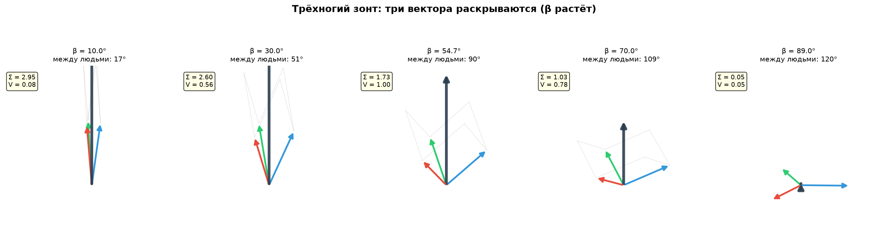
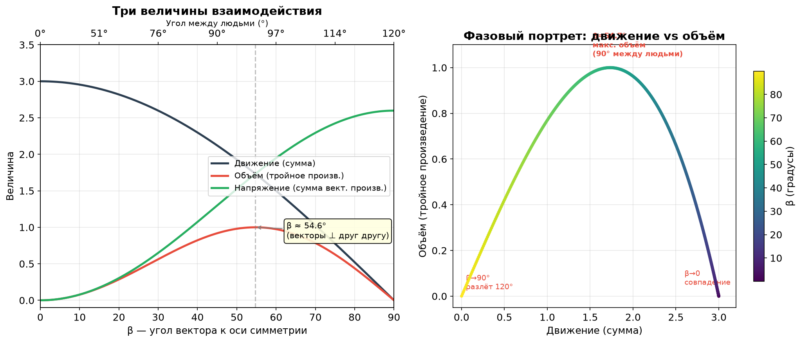
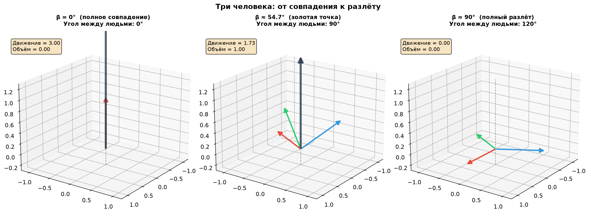

Добавь третий вектор.
Всё сходится. Вот полная картина.
Что заменяет плоскость
В случае двух человек плоскость симметрии была 2D — в ней лежал вектор общего движения, и он мог в ней вращаться. Для трёх человек с трёхкратной симметрией плоскость схлопывается в ось (1D). Вместо вращения в плоскости появляется объём — тройное (смешанное) произведение.
Геометрия
Три единичных вектора, расположенные под углом $\beta$ к оси симметрии, на 120° друг от друга по азимуту. Ось — это «зонтичная ручка», три вектора — спицы.

Угол между любыми двумя людьми: $\theta$ связано с $\beta$ через
Три величины
Вместо двух (сумма и векторное произведение) теперь их три:
| Величина | Формула | Смысл |
|---|---|---|
| Движение (сумма) | $3\cos\beta$ вдоль оси | «куда идут вместе» |
| Напряжение (сумма векторных произведений) | $\tfrac{3\sqrt{3}}{2}\sin^2\beta$ вдоль оси | «попарная дифференция» |
| Объём (тройное произведение) | $\tfrac{3\sqrt{3}}{2}\sin^2\beta\cos\beta$ | «коллективная глубина» |
И между ними — красивая связь:
Объём = напряжение × движение, делённое на количество людей. Чем больше людей — тем больше «знаменатель», тем сложнее получить объём.

Пять случаев
| $\beta$ | $\theta$ (между людьми) | Движение | Объём | Что происходит |
|---|---|---|---|---|
| 0° | 0° | 3.00 | 0 | Все совпали — идут вместе, но новизны ноль |
| 30° | 51° | 2.60 | 0.56 | Сильное движение, появляется объём |
| 54.7° | 90° | 1.73 | 1.00 | Золотая точка: все три вектора взаимно перпендикулярны |
| 75° | 114° | 0.78 | 0.63 | Движение затухает, объём тоже падает |
| 90° | 120° | 0 | 0 | Все в одной плоскости — ни движения, ни объёма |

Золотая точка: $\beta \approx 54.7°$
Это момент, когда все три вектора становятся взаимно перпендикулярными — $\theta = 90°$. Объём достигает максимума (1.00), движение ещё приличное ($\sqrt{3} \approx 1.73$). Это 3D-аналог твоей точки $\alpha = 45°$ для двух человек — там тоже было 90° между векторами и максимум «новизны».
Условие: $\cos\beta = \frac{1}{\sqrt{3}}$, то есть $\beta = \arccos\frac{1}{\sqrt{3}}$.
Сравнение с двумя людьми
| 2 человека | 3 человека | |
|---|---|---|
| Симметрия | плоскость (2D) | ось (1D) |
| «Общее» | сумма — в плоскости | сумма — вдоль оси |
| «Новое» | векторное произведение — в плоскости | тройное произведение — скаляр (объём) |
| Движение | вектор, вращается | вектор, только вдоль оси |
| Золотая точка | $\alpha = 45°$ (90° между людьми) | $\beta \approx 54.7°$ (90° между людьми) |
| Метафора | зонт с 2 спицами | зонт с 3 спицами |
Главное отличие: у двух людей «новизна» — это направление (вектор в плоскости), у трёх — это глубина (объём, скаляр). Двое создают новый путь. Трое создают пространство.
Зонтик с тремя спицами
- Спицы сложены ($\beta \to 0$): зонт вытянут в линию, купола нет. Движение максимальное, но плоское.
- Спицы раскинуты на 54.7°: купол максимальный, ручка ещё достаточно длинная. Идеальный зонт — защищает и сверху, и сбоку.
- Спицы в плоскости ($\beta \to 90°$): зонт лежит на столе. Ручки нет, купола нет. Все силы гасят друг друга.
Формула объёма и почему она обнуляется с двух сторон
- При $\beta \to 0$: $\sin^2\beta \to 0$ — нет разнообразия, нет объёма.
- При $\beta \to 90°$: $\cos\beta \to 0$ — нет общего движения, нет объёма.
- В середине — максимум, где оба сомножителя существенны.
Это означает: для коллективной глубины нужны и различия, и общность. Одно без другого — объём ноль.
Хочешь, могу пойти дальше — четыре человека (там симметрия станет точкой, и всплывёт уже не объём, а гипёробъём), или поговорить про то, что происходит, когда векторы не равны по длине — у кого-то больше «веса» в группе.